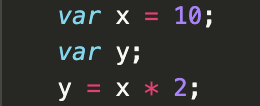
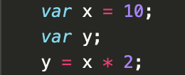

Velg kodespråk
HTML
CSS
JavaScript
Lær mer om de ulike kodespråkene!
Oppsett av en HTML side

Grunnleggende HTML elementer (første halvdel)
HTML Headers
HTML overskrifter er definert fra h1 til h6 tagger, rangert etter viktighet og/eller størrelse. Det er altså seks forskjellig overskrifter.

HTML Paragraph
HTML paragrafer er definert med en p tag. Paragrafer skal inneholde vanlig tekst, som et avsnitt på en nettside.

HTML Links
HTML linker er definert med en a tag. Man skriver linken til en nettside i en href attributt, og deretter det man vil skal være erSynlig mellom de to taggene ("This is a link" i eksempelet nedenfor).

HTML Images
HTML bilder er definert med en img tag. Kildefilen src, bredden width og høyden height defineres som attributter.

HTML Divisions
HTML divisjoner er definert med en div tag. De brukes for å legge elementer inn i divisjoner eller seksjoner. Dette gjør det lettere å påvirke elementene med CSS eller JavaScript.

HTML Buttons
HTML knapper definerer en klikkbar knapp. Dette er en av mange måter å registrere input fra brukeren på. Videre kan JavaScript bruke input-en til å utfør funksjoner. Det anbefales å lese seg opp på ulike input elementer i linkene øverst på denne HTML-siden.

HTML Comments
Du kan legge til kommentarer i HTML koden slik:


Legg merke til at det er et utropstegn (!) i start-taggen, men ikke i slutt-taggen. Ingenting mellom de to taggene blir vist på nettsiden, også om taggene er på forskjellige linjer i koden.
Implementering av CSS

Koble til et eksternt CSS dokument (filnavn.css)
En CSS regel består av en "Selector" og en deklarasjonsblokk.

CSS Element Selector
Element Selector refererer til HTML elementer etter elementnavnet. I eksempelet under blir alle p elementer påvirket av CSS regelen.

CSS ID Selector
En ID Selector refererer til ett spesifikt HTML element, ved hjelp av id attributten. Dette skrives som # i CSS. I eksempelet under vil kun elementet med id "para1" bli påvirket av CSS regelen.

CSS Class Selector
En Class Selector refererer til HTML elementer med en spesifikk class attributt. Dette skrives med et punktum (.) i CSS. I eksempelet under vil alle elementer som har class-en "center" bli påvirket av CSS regelen.

I bildet under kan man se hvordan class attributten blir implementert i HTML. Et element kan ha så mange class-er som helst.

CSS Properties
Man kan endre mange forskjellige egenskaper til et element, men her er noen av de mest brukte (det anbefales å lese mer om ulike CSS egenskaper i linkene øverst på denne CSS-siden):
height/width endrer høyden og/eller bredden til et element
position sier noe om hvordan et element skal posisjoneres i forhold til andre elementer
margin endrer mellomrommet et element har til andre elementer
background-color endrer bakgrunnsfarge
color endrer tekstfargen til et element
text-align sier noe om hvor et tekstelement plasseres (f.eks. midtstilt)
font-family endrer skrifttypen til et tekstelement
font-size endrer tekststørrelse til et element
border legger til en ramme til et element
CSS Comments
Du kan legge til kommentarer i CSS koden slik:


Legg merke til at stjernetegnet (*) alltid står på innsiden av skråstrekene (/).
Implementering av JavaScript

Koble til et eksternt JavaScript dokument (filnavn.js)
Hente HTML elementer til JavaScript
En av mange brukte JavaScript HTML metoder er getElementById(). Eksempelet under "finner" et HTML element med id-en "demo", og endrer innholdet til elementet (innerHTML) til "Hello JavaScript".
Variabler
Om man skal bruke elementer flere ganger er det vanlig å legge de i en variabel. I eksempelet under legger man først HTML elementet i en variabel (var), og endrer deretter innholdet til elementet.

Man kan også endre stilen (CSS) til et HTML element:

Her ser man at man kan bruke variabler til å lagre elementer, men man kan også bruke de til å lagre andre verdier, blant annet:
Numbers
Tall kan skrives med eller uten desimaltegn.
Tall kan naturligvis brukes i regneoperasjoner:
 

Strings
Strings er tekst og kan skrives med doble eller enkle anførselstegn.
JavaScript Functions
En funksjon er en blokk med kode, som kan bli utført når den blir "kallt" opp. For eksempel kan en funksjon bli kallt opp når et event oppstår, som når brukeren klikker på en knapp.
Anbefales å lese seg opp på:
Det fins flere grunnleggende JavaScript HTML metoder man bør kunne, men de tar litt lengre tid å sette seg inn i. Det anbefales særlig å se på disse fem metodene, som du kan finne i linkene på toppen av denne JavaScript-siden:
JavaScript if Statements
JavaScript Objects
JavaScript Arrays
JavaScript Functions
JavaScript for Loops
JavaScript Comments
Du kan legge til kommentarer i enkle linker i JavaScript slik:


Eller over flere linjer slik (samme som CSS):

GitHub
Installasjon av Git (for Mac)

Push & Pull
1. git clone "link til github repository"
Henter ned repository, både individuelt og gruppe.
2. cd "din repository mappe"
Sender Git til filplaseringen du har repository på. Ofte under Brukere/dinrepository [Users/yourrepository]. Eks. «cd GRUPPE-REPOSITORY/». Kan skrive «ls» for å finne ut hvor Git er i filsystemet ditt, slik at du kan finne hva du skal skrive.
3. nano README.md (ctrl+O, enter, ctrl+X for å lagre når du er ferdig å redigere dokumentet)
Nano bruker til å åpne og redigere tekst.
4. git checkout -b "branch navn"
Brukes til å flytte Git fra main til en branch innenfor en REPOSITORY/. -b brukes for å lage en ny branch, så hvis en skal bare flytte mellom branches trengs ikke -b.
5. git add README.md (filen du har endret)
Den legger til tesktfilen du har endret på.
6. git commit -m "melding til commit"
Denne lagrer endringene du har gjort på din lokale repository på pcen din. -m for å sende melding.
7. git push -u origin "branch navn"
Sender endringene du har gjort opp til Github. Technically, the -u flag adds a tracking reference to the upstream server you are pushing to.